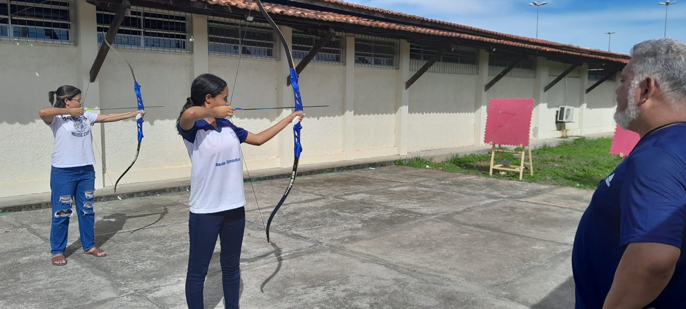

A Escola Armindo Guaraná é dedicada a fornecer educação de qualidade para todos os alunos, preparando-os para os desafios do futuro.
O SERGIPE PARQUE TECNOLÓGICO, pessoa jurídica de direito privado, é constituída sob a forma de associação sem fins lucrativos e qualificada como Organização Social (OS) nos termos do Decreto Estadual nº 22.940/2004, que tem por objetivo a promoção do desenvolvimento científico e tecnológico local e regional, através do fomento de atividades de pesquisa e de ensino, do apoio a empreendimentos de base técnica e industrial e da implementação de um parque tecnológico que contemple a gestão compartilhada de recursos humanos, materiais, físicos e técnicos, voltadas ao desenvolvimento social, institucional, econômico, da cidadania, da qualidade de vida e da promoção do pleno emprego, nas áreas de: Cultura; Ensino, Treinamento e Aperfeiçoamento; Pesquisa Científica e Tecnológica; e Proteção, Conservação do Meio Ambiente e Organização Adequada do Território